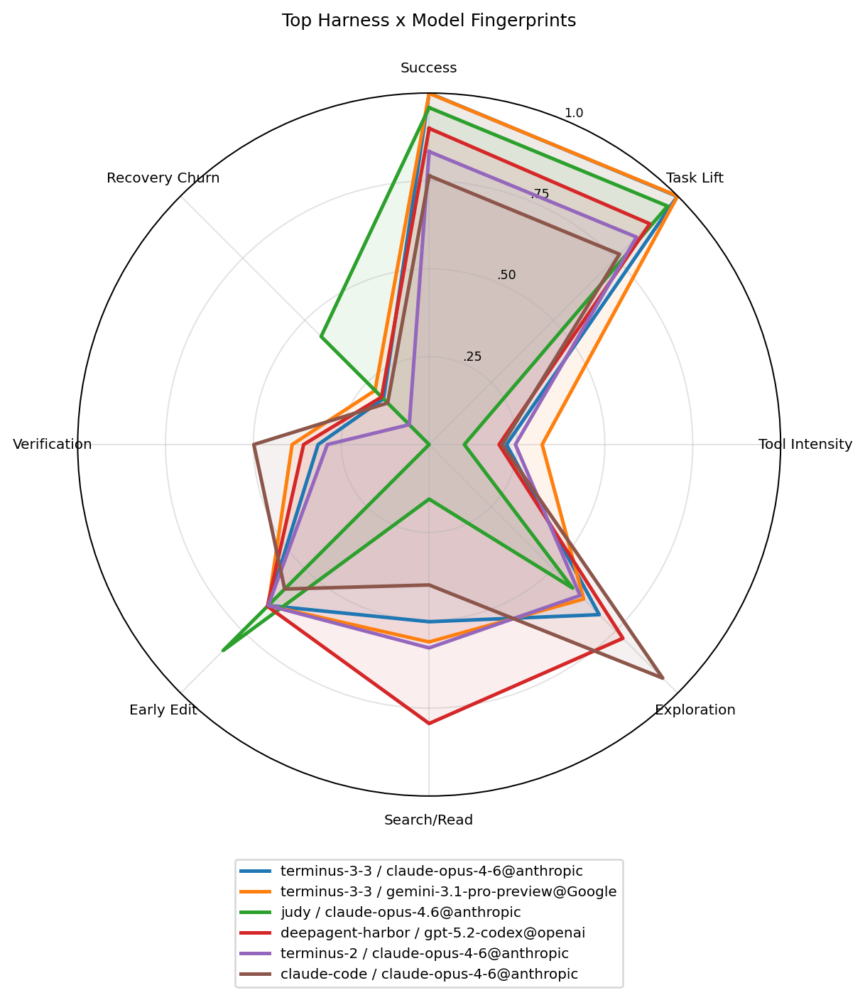
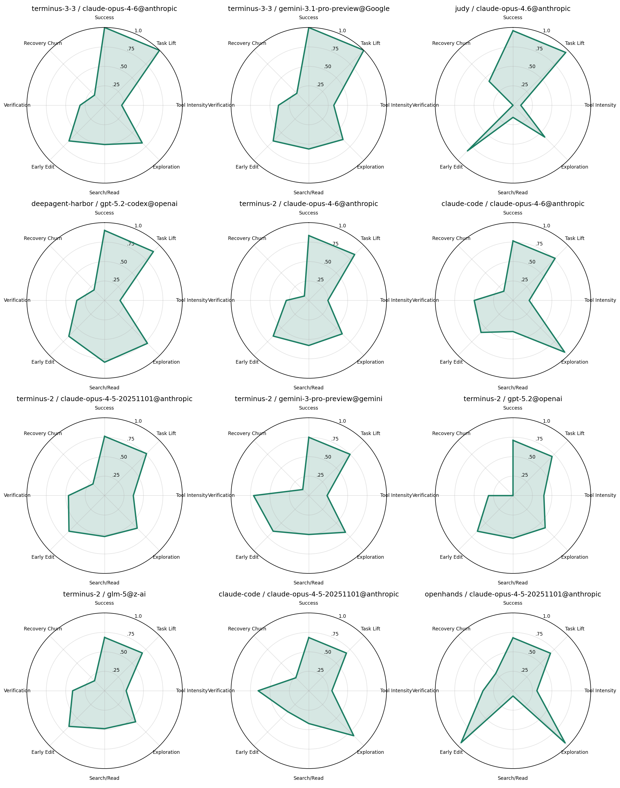
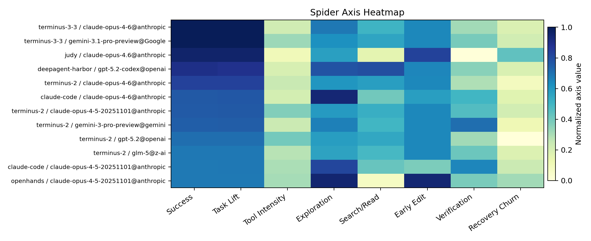

Top Overlay

Trace Behavior spider plots for harness x model cells. Trace mode is a behavior fingerprint. High values mean more of that property, not always better. For example, high tool intensity or recovery churn can be useful evidence of harness/model style.
All axes are normalized to 0..1 within this corpus, so compare shapes inside one report rather than across unrelated datasets.



| group_label | runs | tasks | success_rate | task_adjusted_success_lift | spider_area | success | task_lift | tool_intensity | exploration_diversity | search_read_intensity | edit_eagerness | verification_intensity | recovery_churn |
|---|---|---|---|---|---|---|---|---|---|---|---|---|---|
| terminus-3-3 / claude-opus-4-6@anthropic | 442 | 89 | 0.749 | 0.352 | 0.569 | 1.000 | 0.999 | 0.220 | 0.684 | 0.504 | 0.648 | 0.316 | 0.184 |
| terminus-3-3 / gemini-3.1-pro-preview@Google | 445 | 89 | 0.748 | 0.352 | 0.595 | 0.999 | 1.000 | 0.322 | 0.622 | 0.562 | 0.648 | 0.390 | 0.218 |
| judy / claude-opus-4.6@anthropic | 445 | 89 | 0.719 | 0.323 | 0.502 | 0.959 | 0.959 | 0.100 | 0.578 | 0.155 | 0.829 | 0.000 | 0.435 |
| deepagent-harbor / gpt-5.2-codex@openai | 433 | 89 | 0.677 | 0.272 | 0.595 | 0.900 | 0.888 | 0.199 | 0.780 | 0.794 | 0.651 | 0.357 | 0.191 |
| terminus-2 / claude-opus-4-6@anthropic | 445 | 89 | 0.629 | 0.233 | 0.515 | 0.834 | 0.835 | 0.245 | 0.607 | 0.579 | 0.648 | 0.290 | 0.080 |
| claude-code / claude-opus-4-6@anthropic | 445 | 89 | 0.580 | 0.184 | 0.541 | 0.765 | 0.766 | 0.208 | 0.940 | 0.400 | 0.581 | 0.499 | 0.167 |
| terminus-2 / claude-opus-4-5-20251101@anthropic | 445 | 89 | 0.578 | 0.182 | 0.542 | 0.762 | 0.763 | 0.369 | 0.593 | 0.526 | 0.648 | 0.465 | 0.211 |
| terminus-2 / gemini-3-pro-preview@gemini | 445 | 89 | 0.569 | 0.173 | 0.546 | 0.749 | 0.750 | 0.235 | 0.667 | 0.500 | 0.648 | 0.710 | 0.110 |
| terminus-2 / gpt-5.2@openai | 444 | 89 | 0.540 | 0.144 | 0.489 | 0.710 | 0.710 | 0.397 | 0.585 | 0.547 | 0.648 | 0.315 | 0.000 |
| terminus-2 / glm-5@z-ai | 442 | 89 | 0.523 | 0.127 | 0.493 | 0.685 | 0.686 | 0.277 | 0.564 | 0.487 | 0.648 | 0.411 | 0.182 |
| claude-code / claude-opus-4-5-20251101@anthropic | 445 | 89 | 0.521 | 0.126 | 0.521 | 0.683 | 0.685 | 0.297 | 0.817 | 0.421 | 0.381 | 0.651 | 0.236 |
| openhands / claude-opus-4-5-20251101@anthropic | 445 | 89 | 0.519 | 0.123 | 0.541 | 0.680 | 0.682 | 0.307 | 0.948 | 0.068 | 0.944 | 0.386 | 0.314 |
| terminus-2 / gemini-3-flash-preview@gemini | 445 | 89 | 0.517 | 0.121 | 0.527 | 0.677 | 0.678 | 0.277 | 0.614 | 0.658 | 0.648 | 0.472 | 0.195 |
| codex / gpt-5@openai | 439 | 89 | 0.494 | 0.097 | 0.409 | 0.646 | 0.646 | 0.100 | 0.368 | 0.456 | 0.648 | 0.343 | 0.066 |
| terminus-2 / gpt-5.1@openai | 445 | 89 | 0.476 | 0.080 | 0.523 | 0.621 | 0.622 | 0.308 | 0.597 | 0.915 | 0.648 | 0.428 | 0.047 |
| codex / gpt-5-codex@openai | 436 | 89 | 0.443 | 0.046 | 0.349 | 0.574 | 0.574 | 0.054 | 0.416 | 0.282 | 0.648 | 0.200 | 0.047 |
| terminus-2 / gpt-5-codex@openai | 437 | 89 | 0.442 | 0.043 | 0.467 | 0.573 | 0.570 | 0.250 | 0.539 | 0.591 | 0.648 | 0.401 | 0.169 |
| openhands / gpt-5@openai | 445 | 89 | 0.438 | 0.042 | 0.469 | 0.568 | 0.569 | 0.281 | 0.747 | 0.172 | 0.737 | 0.261 | 0.415 |
| terminus-2 / claude-sonnet-4-5-20250929@anthropic | 440 | 89 | 0.432 | 0.034 | 0.488 | 0.559 | 0.557 | 0.375 | 0.569 | 0.475 | 0.648 | 0.508 | 0.212 |
| mini-swe-agent / claude-sonnet-4-5-20250929@anthropic | 442 | 89 | 0.425 | 0.029 | 0.494 | 0.550 | 0.551 | 0.337 | 0.419 | 0.646 | 0.648 | 0.632 | 0.166 |
| openhands / claude-sonnet-4-5-20250929@anthropic | 443 | 89 | 0.424 | 0.029 | 0.625 | 0.549 | 0.551 | 0.832 | 1.000 | 0.116 | 0.710 | 0.447 | 0.795 |
| terminus-2 / minimax-m2.5@Minimax | 445 | 89 | 0.422 | 0.027 | 0.458 | 0.546 | 0.547 | 0.269 | 0.548 | 0.482 | 0.648 | 0.475 | 0.149 |
| mini-swe-agent / gpt-5-codex@openai | 444 | 89 | 0.414 | 0.018 | 0.424 | 0.535 | 0.536 | 0.162 | 0.405 | 0.620 | 0.648 | 0.407 | 0.078 |
| claude-code / claude-sonnet-4-5-20250929@anthropic | 437 | 89 | 0.396 | -0.001 | 0.476 | 0.509 | 0.509 | 0.242 | 0.826 | 0.360 | 0.489 | 0.619 | 0.250 |
| terminus-2 / deepseek-v3.2@deepseek | 445 | 89 | 0.396 | -0.000 | 0.499 | 0.508 | 0.510 | 0.517 | 0.586 | 0.553 | 0.648 | 0.418 | 0.255 |
| terminus-2 / claude-opus-4-1-20250805@anthropic | 443 | 89 | 0.382 | -0.015 | 0.464 | 0.489 | 0.489 | 0.363 | 0.579 | 0.376 | 0.648 | 0.574 | 0.198 |
| openhands / claude-opus-4-1-20250805@anthropic | 445 | 89 | 0.368 | -0.027 | 0.568 | 0.471 | 0.472 | 0.693 | 0.926 | 0.027 | 0.644 | 0.566 | 0.747 |
| terminus-2 / gpt-5.1-codex@openai | 445 | 89 | 0.368 | -0.027 | 0.440 | 0.471 | 0.472 | 0.244 | 0.544 | 0.538 | 0.648 | 0.435 | 0.169 |
| claude-code / minimax-m2.1@minimax | 445 | 89 | 0.366 | -0.029 | 0.446 | 0.468 | 0.469 | 0.285 | 0.760 | 0.371 | 0.299 | 0.636 | 0.278 |
| terminus-2 / moonshotai/Kimi-K2-Thinking@together_ai | 892 | 89 | 0.359 | -0.038 | 0.516 | 0.457 | 0.457 | 0.520 | 0.545 | 0.544 | 0.648 | 0.549 | 0.411 |